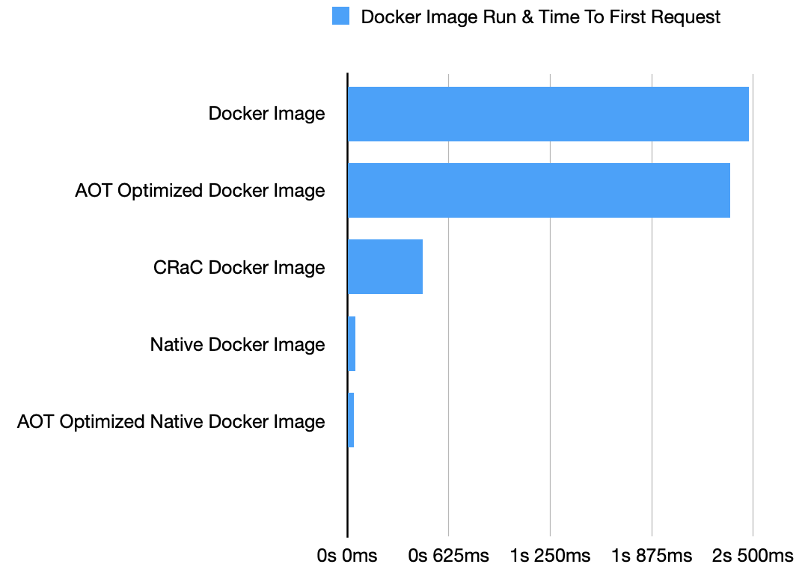

Building a Docker image of your Micronaut application
Micronaut build plugins offer several ways to build Docker images: JAR, GraalVM native executable, and CRaC.
On this guide
In this section
Getting Started
In this guide, we will create a Micronaut application written in Java.
What you will need
To complete this guide, you will need the following:
-
Some time on your hands
-
A decent text editor or IDE (e.g. IntelliJ IDEA)
-
JDK 21 or greater installed with
JAVA_HOMEconfigured appropriately
Solution
We recommend that you follow the instructions in the next sections and create the application step by step. However, you can go right to the completed example.
-
Download and unzip the source
Writing the Application
Create an application using the Micronaut Command Line Interface or with Micronaut Launch.
mn create-app example.micronaut.micronautguide \
--features=crac,micronaut-aot,graalvm \
--build=maven \
--lang=java \
--test=junit|
Note
|
If you don’t specify the --build argument, Gradle with the Kotlin DSL is used as the build tool. If you don’t specify the --lang argument, Java is used as the language.If you don’t specify the --test argument, JUnit is used for Java and Kotlin, and Spock is used for Groovy.
|
The previous command creates a Micronaut application with the default package example.micronaut in a directory named micronautguide.
If you use Micronaut Launch, select Micronaut Application as application type and add crac, micronaut-aot, and graalvm features.
|
Note
|
If you have an existing Micronaut application and want to add the functionality described here, you can view the dependency and configuration changes from the specified features, and apply those changes to your application. |
Building a Docker Image with the Micronaut Maven Plugin
Micronaut Maven Plugin offers several options to package your application as a Docker image.
-
dockerbuilds a Docker image with the application artifacts (compiled classes, resources, dependencies, etc). -
docker-native: builds a Docker image with a GraalVM native image inside. -
docker-crac: builds a pre-warmed, checkpointed Docker image.
Moreover, you can combine AOT build optimizations with Docker packaging by including the system property micronaut.aot.enabled.
Controller
Add a controller that responds with the JSON payload in the root route.
{"message":"Hello World"}Time To First Request Measurement script
In this guide, we use the following script to measure time to first request of a Docker image.
#!/usr/bin/env bash
set -e
TYPE="docker"
PORT=8080
DELAY=20
usage() {
echo "$0: Time to first request for checkpoint, native, java or docker applications"
echo ""
echo " $0 [-c|-d|-j|-n] [-p port] ARTIFACT"
echo ""
echo " -c : ARTIFACT is a CRaC checkpoint"
echo " -d : ARTIFACT is a docker image (default)"
echo " -j : ARTIFACT is a fat jar"
echo " -n : ARTIFACT is a native executable"
echo " -p : port to check (default 8080)"
echo ""
}
while getopts 'cdjnp:' flag; do
case "${flag}" in
c) TYPE="crac" ;;
d) TYPE="docker" ;;
j) TYPE="java" ;;
n) TYPE="native" ;;
p) PORT="${OPTARG}" ;;
*) usage
exit 1 ;;
esac
done
shift $(($OPTIND - 1))
echo $1
if [ $# -eq 0 ]; then
echo "Needs the docker image or Jar file to run"
exit 1
fi
execute() {
local END=$((SECONDS+DELAY))
while ! curl -o /dev/null -s "http://localhost:${PORT}"; do
if [ $SECONDS -gt $END ]; then
echo "No response from the app in $DELAY seconds" >&2
exit 1
fi
sleep 0.001;
done
}
mytime() {
exec 3>&1 4>&2
mytime=$(TIMEFORMAT="%3R"; { time $1 1>&3 2>&4; } 2>&1)
exec 3>&- 4>&-
echo $mytime
}
if [[ "$TYPE" == "crac" ]]; then
java -XX:CRaCRestoreFrom=$1 &
PID=$!
TTFR=$(mytime execute)
kill -9 $PID
elif [[ "$TYPE" == "java" ]]; then
java -jar $1 &
PID=$!
TTFR=$(mytime execute)
kill -9 $PID
elif [[ "$TYPE" == "docker" ]]; then
CONTAINER=$(docker run -d --rm -p $PORT:$PORT --privileged $1)
TTFR=$(mytime execute)
docker container kill $CONTAINER > /dev/null
else
$1 &
PID=$!
TTFR=$(mytime execute)
kill -9 $PID
fi
if [ "$TTFR" != "" ]; then
echo "${TTFR} seconds"
else
exit 1
fiDocker Image
Generate a Docker image with:
./mvnw package -Dpackaging=docker...
..
.
[INFO] Built image to Docker daemon as micronautguide
...
[INFO] Executing tasks:
[INFO] [==============================] 100.0% complete
[INFO]
[INFO] ------------------------------------------------------------------------
[INFO] BUILD SUCCESS
[INFO] ------------------------------------------------------------------------
[INFO] Total time: 13.467 s
[INFO] Finished at: 2023-02-13T11:06:16+01:00Supply the image name and tag to the time to first request script:
./ttfr.sh micronautguide:latest
micronautguide:latest
...
.
2.473 secondsDocker image with a GraalVM native executable inside
Generate a Docker image with:
./mvnw package -Dpackaging=docker-native -Pgraalvm...
..
.
[INFO] OK: 19 MiB in 18 packages
[INFO] Removing intermediate container 8779752a14f2
[INFO] ---> ce1f4cc2a00e
[INFO] Step 14/17 : COPY --from=builder /home/app/application /app/application
[INFO]
[INFO] ---> d6910584b917
[INFO] Step 15/17 : ARG PORT=8080
[INFO]
[INFO] ---> Running in e18c65e28d66
[INFO] Removing intermediate container e18c65e28d66
[INFO] ---> 3215839af33e
[INFO] Step 16/17 : EXPOSE ${PORT}
[INFO]
[INFO] ---> Running in 7e3cb6cb6c60
[INFO] Removing intermediate container 7e3cb6cb6c60
[INFO] ---> 8285031d9cf1
[INFO] Step 17/17 : ENTRYPOINT ["/app/application"]
[INFO]
[INFO] ---> Running in 69ce96bc2a28
[INFO] Removing intermediate container 69ce96bc2a28
[INFO] ---> cada15938fc4
[INFO] Successfully built cada15938fc4
[INFO] Successfully tagged micronautguide:latest
[INFO] ------------------------------------------------------------------------
[INFO] BUILD SUCCESS
[INFO] ------------------------------------------------------------------------
[INFO] Total time: 01:58 min
[INFO] Finished at: 2023-02-13T11:11:10+01:00
[INFO] ------------------------------------------------------------------------Run the time to first request script with the native Docker image:
./ttfr.sh micronautguide:latest
micronautguide:latest
...
.
0.047
secondsCRaC Docker Image
Generate a Docker Image containing a CRaC enabled JDK and a pre-warmed, checkpointed application:
./mvnw package -Dpackaging=docker-cracRun the time to first request script with the CRaC Docker image:
./ttfr.sh micronautguide:latest
micronautguide:latest
...
.
0.462 secondsAOT Optimized Docker Image
./mvnw package -Dpackaging=docker -Dmicronaut.aot.enabled=trueRun the time to first request script with the AOT optimized Docker image:
./ttfr.sh micronautguide:latest
micronautguide:latest
...
.
2,359 secondsAOT Optimized Docker Image with a native executable inside
./mvnw package -Dpackaging=docker-native -Dmicronaut.aot.enabled=true -PgraalvmRun the time to first request script with the AOT optimized Docker image:
./ttfr.sh micronautguide:latest
micronautguide:latest
...
.
0.039 secondsComparisons
Micronaut Framework offers many options for packaging your application as a Docker image. As illustrated in the following chart, you can speed up your Docker images by using the GraalVM integration in Micronaut Framework, the CRaC (Coordinated Restore at checkpoint) integration in Micronaut Framework, the Micronaut AOT Gradle Plugin, or Maven Plugin integration with Micronaut AOT.
The following chart illustrates the speed gains you can obtain:

Docker Image |
2s 473ms |
Optimized Docker Image |
2s 359ms |
CRaC Docker Image |
462ms |
Native Docker Image |
47ms |
Optimized Native Docker Image |
39ms |
I used the following hardware to calculate the previous benchmarks
Characteristic |
Value |
Model Name |
iMac Pro 2017 |
Processor |
3GHz 10-Core Intel Xeon W |
Memory |
32 GB 2666 MHz DDR4 |
Total Number of Cores |
10 |
Operating System |
Mac OS X 10.15.7 (Mojave) |
Next Steps
Explore more features with Micronaut Guides.
Learn more about:
Help with the Micronaut Framework
The Micronaut Foundation sponsored the creation of this Guide. A variety of consulting and support services are available.
License
|
Note
|
All guides are released with an Apache License 2.0 for the code and a Creative Commons Attribution 4.0 license for the writing and media (images). |